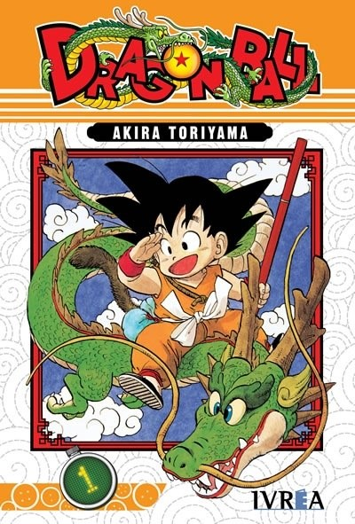
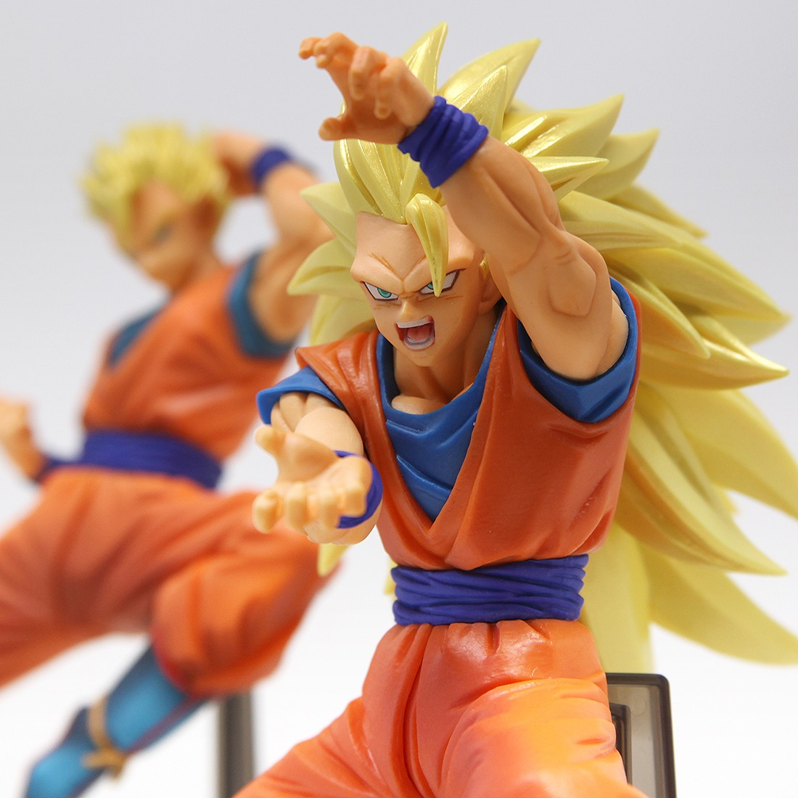

Historia
Dragon Ball (ドラゴンボール lit. Bola de dragón/Esfera del dragón?) es un manga escrito e ilustrado por Akira Toriyama. Fue publicado originalmente en la revista Shōnen Jump, de la editorial japonesa Shūeisha, entre 1984 y 1995.12 Su trama describe las aventuras de Gokū, un guerrero saiyajin, cuyo fin es proteger a la Tierra de otros seres que quieren conquistarla y exterminar a la humanidad. Conforme transcurre la trama, conoce a otros personajes que le ayudan en este propósito. El nombre de la serie proviene de unas esferas mágicas que al ser reunidas invocan a un dragón que concede deseos. En varias ocasiones resultan útiles tanto para Gokū y sus amigos como para la humanidad, aunque también son procuradas de forma constante por algunos seres malignos. El manga tuvo 519 capítulos impresos recopilados en 42 volúmenes tankōbon.12 Dos años después de su lanzamiento, Toei Animation estrenó una adaptación anime que abarcó aproximadamente la primera mitad de la obra. Una vez concluida su transmisión en 1989 por el canal Fuji Television en Japón, Toei estrenó una continuación titulada Dragon Ball Z, la cual incorporó el contenido restante del manga.1 Un tercer anime producido por el mismo estudio se estrenó en 1996. Denominado Dragon Ball GT, posee un argumento inédito en cuya redacción no participó Toriyama.3 En 2015 comenzó a emitirse Dragon Ball Super en Fuji Television, anime que continúa los sucesos de Dragon Ball Z y que cuenta con una adaptación al manga, publicada a partir de junio del mismo año en Shōnen Jump.4 La violencia y desnudez presentes en algunos episodios tanto del anime como del manga provocaron la censura por parte de las distribuidoras en distintos países.5 Las ventas del material impreso, cuantificadas en más de 160 millones de copias vendidas en Japón6 y de 300 millones a nivel mundial,7 llevaron a Dragon Ball a ser uno de los títulos más exitosos de Shūeisha.8 Las adaptaciones anime también consiguieron un éxito notable; en 1999, por ejemplo, uno de sus capítulos logró un récord de audiencia en EE. UU. en la cadena Cartoon Network, con 1.7 millones de televidentes.9 Dragon Ball es considerada como una de las obras más influyentes10 y populares11 de la época contemporánea,10 y ha servido de inspiración para otros mangakas como Eiichirō Oda, Masashi Kishimoto, Tite Kubo e Hiro Mashima, creadores de One Piece, Naruto, Bleach y Fairy Tail, respectivamente.12131415 Existe una franquicia de productos sobre el universo creado por Toriyama, que incluye películas animadas y de imágenes reales, animaciones originales, videojuegos, cartas coleccionables, figuras de acción y juguetes, entre otros.
Distribucion

Manga
La editorial Shūeisha comenzó a publicar Dragon Ball el 3 de diciembre de 1984, en la revista de manga Shūkan Shōnen Jump de tiraje semanal. Después de más de una década, y un total de 519 capítulos recopilados en 42 volúmenes tankōbon,el último capítulo salió a la venta el 5 de junio de 1995. La conclusión se debió a que Toriyama se sentía exhausto y quiso dejar de dibujar por algún tiempo.Kazuhiko Torishima, Yū Kondō y Fuyuto Takeda fueron los responsables de la edición del contenido.

Anime
La producción del anime consta de varias fases. En la primera de ellas se reúnen los involucrados en la serie para planear, entre otros aspectos, la cantidad de episodios y la transición del manga a la animación. El guionista redacta luego el libreto para cada capítulo, en un proceso que le toma varias revisiones por parte de todos los involucrados en la producción. A continuación, el director de la serie elabora el guion gráfico con las principales secuencias de cada capítulo para que funcione a manera de guía visual, que suele ser acompañada de un texto donde se detallan los acontecimientos que tienen lugar en esa escena, así como los efectos de sonido y animaciones requeridas en específico.

Video Juegos
Se han lanzado al mercado varios videojuegos basados en el material original de Toriyama para videoconsolas de segunda generación en adelante. El primer juego para consola de sobremesa del que se tiene noción es Dragon Ball: Dragon Daihikyou (ドラゴンボール ドラゴン大秘境 Doragon Bōru: Dragon Daihikyō?), destinado para la Super Cassette Vision, desarrollado y distribuido por la compañía Epoch a finales de 1986.

juguetes
Entre el merchandising de Dragon Ball, que es mucho, destacan las figuras de Banpresto. Estas figuras satisfacen el alma de todo saiyano con su increíble calidad, con detalles y acabados de matrícula de honor. Y si eres fan de Dragon Ball, tienes que tener estas figuras sí o sí en tu casa.